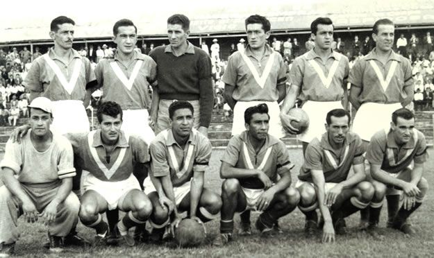

Historia
En 1951, un equipo Argentino que estaba por gira de Colombia fue comprado por 50 mil pesos de la epoca y se convirtió en ese entonces el Atletico Quindío.
El 19 de marzo de 1951 Atletico Quindío jugó su primer partido en el mitico estadio San José, se enfrento contra el campeón en ese entonces, Deportes Caldas, Atletico Quindío logró un triunfo contra todo pronostico con un resultado de 3-1 con 2 goles del legendario delantero argentino Urruti.
En 1956 Atletico Quindío, lograría su primer y único titulo en la historia del Depores Quindío, tras un gran torneo, donde obtuvo el primer puesto con 56 unidades y golearía al Deportivo Pereira su mayor contricante con un resultado a favor de 7-1, con un Jaime Gutierrez imparable siendo el máximo goleador del torneo con 26 anotaciones.
Los siguientes años no serían muy buenos para el Deportes Quindío, pues surgieron muchos problemas ecónomicos y perdieron importantes jugadores. En 1989 se inaguro el Estadio Centenario, más conocido como el Jardín de América, con una capacidad de 20.716 espectadores. En 1996 con la llegada del director técnico Oscar Hector Quintabani logró llegar a las semifinales del torneo de la mano de importantes íconos del Deportes Quíndio como Daniel Tilger, Jorge Victoria y Ruben Dario Hernandez
Tras el terremoto en Armenia en el año 1999, vendrían años muy duros para el Deportes Quindío, en el 2000 el onceno milagroso sufriría su primer descenso en toda su historia, sin embargo de la mano de Eduardo Lara Deportes Quindío volvería a la máxima categoría en el 2001, sin embargo en los siguientes años tendría temporadas muy irregulares pues el equipo luchaba contra el fantasma del descenso y no por entrar a las finales del torneo.
En 2013 Deportes Quindío sufrió su segundo descenso, los siguientes años el onceno milagroso siempre estuvo cerca del ascenso, sin embargo en las instancias finales nunca se le daban los resultados. No fue entonces hasta 2021 que el Quindío logró ascender con Oscar Hector Quintabani como DT, sin embargo descendería en el año 2022 por un formato de descenso que estaba mal diseñado.